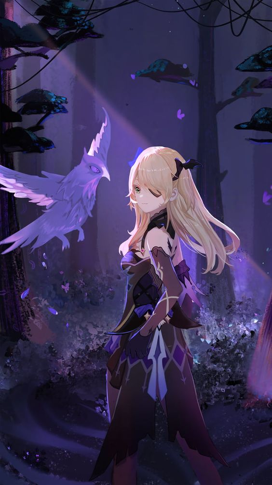

Companion
Fischl: can be invited as a Companion into the player's Serenitea Pot after obtaining her and completing the World Quest Idle Teapot Talk. When spoken to, Oz will also appear from a flash of feathers
and Electro to join in the conversation.
Favorite Furnishing Sets
If a character's favorite furnishing set is placed in the same realm as the character for the first time, the character will automatically teleport to the furnishing set. Interacting with the character will initiate a special dialogue, after which the character will teleport back to their original position.
Fischl has 2 Favorite Furnishing Sets: Amidst Poetic Pondering, and Iter Ad Astra Abyssosque